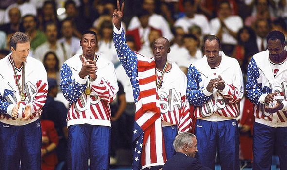

Jordan played on two Olympic gold medal-winning American basketball teams. He won a gold medal as a college player in the 1984 Summer Olympics. The team was coached by Bob Knight and featured players such as Patrick Ewing, Sam Perkins, Chris Mullin, Steve Alford, and Wayman Tisdale. Jordan led the team in scoring, averaging 17.1 ppg for the tournament. |
 |
|---|